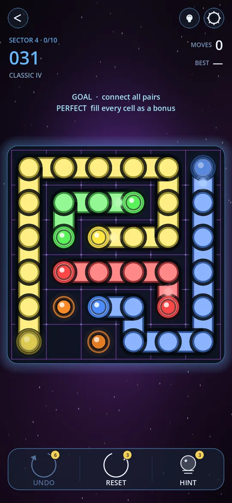

At the bottom of every level sit three buttons: undo, reset and hint. Early on you can tap them as often as you like. Later, small numbers appear on them. Here's what each one does, how the limits work, and the fourth kind of help that doesn't need a button at all.


What each button does
- Undo steps back one move. Press it again to go back further.
- Reset clears the whole board so you can start the level over.
- Hint shows the full route of one pair. It's hidden in the first two sectors, where the puzzles are small enough not to need it.
- Redo a line isn't a button: drag from a dot of a finished line to draw just that line again (on the 3D cube, hold the dot). See how to redo one line.
When the numbers start to count
In the level packs, sectors 1 to 3 have unlimited undo and reset. From sector 4, each level gives you a set number of each, shown as a small badge on the button. Sector 4, for example, gives 6 undos per level, and later sectors give fewer. The count starts fresh on every level.
Why limit them at all? Without a limit, a hard board turns into trying every route until one fits. A small budget nudges you to read the board first, which is where the satisfying part of a flow puzzle is.
Other modes
- Daily and Weekly: unlimited undo and reset, and one free hint.
- Endless: unlimited on Casual, Relaxed and Challenging. Expert, Master, Grandmaster and Legend have a limit, so the name means something.
- Time Trial: no undo and no hints. Speed is the whole point. Time Trial tips explains how to fix lines there.
Ran out? Two options
When a counter hits zero, the game offers a short video for one more. That's always optional: you can also just think a little longer. If you bought Remove Ads in the shop, you get the extra charge straight away, no video.
Save your undos: one wrong line? Redo it from its dot instead of pressing undo a few times. A redo doesn't use up an undo.
Help and perfect scores
Some goals ask for more than solving the level, for example finishing without undo. On those goals, an undo and a redone line both count as help. The same goes for the perfect mark on Weekly puzzles. Want to go for them? Read the board first: advanced flow puzzle strategy has techniques to find the right route before you draw.
Play Circuit Trace free on Google Play: 700+ flow puzzles.
Frequently asked questions
Why does the undo button show a number?
From sector 4 of a level pack, each level gives you a set number of undos, resets and hints. The number on the button shows how many you have left on this level.
What happens when I run out of undos?
You can watch a short video to get one more. If you bought Remove Ads, you get it straight away without a video.
Are undos limited in the Daily puzzle?
No. Daily and Weekly puzzles have unlimited undo and reset, plus one free hint.